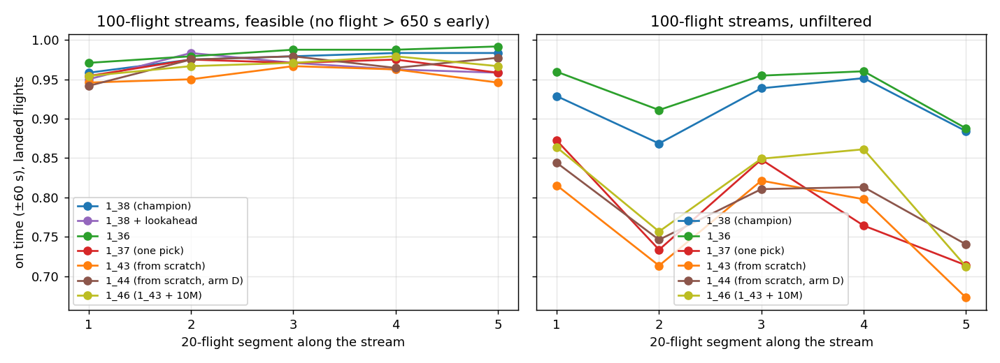

Long streams¶
Summary
Flown on 60- and 100-flight streams (three and five 20-flight waves), nine agents fly every
feasible stream without a single loss of separation: the champion 1_38, the rest of its
lineage from 1_34 on (1_35, 1_36, 1_37, 1_39), the curriculum run 1_43 and the hard-solved
fine-tunes 1_47 and 1_48. Precision does not drift along the stream. A feasible stream is one
where no flight needs more than the generator's own 650 s cap of delay. The other seven agents
tested each lose separation on one to six of the 39 feasible streams: 1_32 and 1_33, from
before the lexicographic objective, and the from-scratch arms A, B and D and 1_46. On
unfiltered streams the losses come back, and they sit in the waves that are over capacity.
Feasible long streams are rare in generated traffic: 4.5% at 60 flights, 0.5% at 100.
Data: analysis/2026-09-27_scratch/longstreams/ in the code repo (report.md, eval/, seeds/).
Screening: analysis/long_stream_seeds.py. Scoring: score_windowed.py --seed-file --flights-csv.
Table and plot: analysis/long_stream_report.py. Models: 1_38 (champion),
1_36, 1_37 (one pick), the from-scratch
1_43 and 1_44, and 1_46
(1_43 + 10M); all deterministic.
Method¶
- Streams: stitched 3×20 = 60 and 5×20 = 100 flights, with a 600–900 s (10–15 min) gap between waves (stitched streams). Stream seeds come from a fixed generator and are never among the 100 validation seeds.
- Feasible: flown do-nothing, no flight is predicted more than 650 s early anywhere in the stream. 650 s is the scenario generator's own cap on the delay a flight may need.
- Unfiltered: the first 40 candidate streams of each length, as generated.
Feasible long streams are rare.
| stream | candidates | feasible | largest early arrival: median / 90th pct / max |
|---|---|---|---|
| 60 flights | 600 | 27 (4.5%) | 1 210 / 1 735 / 2 599 s |
| 100 flights | 2 500 | 12 (0.5%) | 1 359 / 1 859 / 2 679 s |
The 100-flight feasible set is only 12 streams: a small sample, so read its rates loosely.
Results¶
Counts are streams; "on time" is the share of flights within ±60 s of their AMAN target. The table
is generated from the evaluation files (longstreams/eval/, every stream run to its own horizon)
and lists every agent flown on long streams so far; agents not yet flown are named below it.
| stream | n | model | no loss of separation | solved (±60 s) | hard-solved (±30 s) | on time, all flights | on time, landed | mean |dev|, landed | clearances / flight |
|---|---|---|---|---|---|---|---|---|---|
| 60 flights, feasible | 27 | 1_32 | 23 | 3 | 0 | 0.872 | 0.965 | 15 s | 5.9 |
| 1_33 | 26 | 0 | 0 | 0.893 | 0.921 | 20 s | 6.5 | ||
| 1_34 | 27 | 1 | 0 | 0.949 | 0.949 | 18 s | 6.7 | ||
| 1_35 | 27 | 3 | 0 | 0.959 | 0.959 | 13 s | 4.7 | ||
| 1_36 | 27 | 9 | 1 | 0.985 | 0.985 | 9 s | 6.5 | ||
| 1_37 | 27 | 4 | 0 | 0.976 | 0.976 | 16 s | 3.6 | ||
| 1_38 | 27 | 11 | 1 | 0.986 | 0.986 | 9 s | 5.7 | ||
| 1_39 | 27 | 4 | 0 | 0.964 | 0.964 | 13 s | 6.2 | ||
| 1_40 | 26 | 1 | 0 | 0.923 | 0.933 | 20 s | 8.4 | ||
| 1_41 | 27 | 3 | 0 | 0.946 | 0.946 | 18 s | 8.5 | ||
| 1_42 | 27 | 0 | 0 | 0.922 | 0.922 | 19 s | 6.8 | ||
| 1_43 | 27 | 1 | 0 | 0.952 | 0.952 | 15 s | 6.9 | ||
| 1_44 | 26 | 8 | 0 | 0.949 | 0.973 | 12 s | 7.5 | ||
| 1_46 | 26 | 5 | 0 | 0.947 | 0.974 | 10 s | 8.4 | ||
| 1_47 | 27 | 2 | 0 | 0.967 | 0.967 | 12 s | 9.7 | ||
| 1_48 | 27 | 7 | 0 | 0.977 | 0.977 | 8 s | 8.4 | ||
| 60 flights, unfiltered | 40 | 1_32 | 13 | 0 | 0 | 0.538 | 0.835 | 57 s | 3.8 |
| 1_33 | 22 | 0 | 0 | 0.580 | 0.804 | 73 s | 4.3 | ||
| 1_34 | 24 | 1 | 0 | 0.623 | 0.820 | 69 s | 4.6 | ||
| 1_35 | 31 | 1 | 0 | 0.738 | 0.824 | 64 s | 4.3 | ||
| 1_36 | 31 | 6 | 0 | 0.798 | 0.930 | 28 s | 6.1 | ||
| 1_37 | 34 | 1 | 0 | 0.748 | 0.819 | 73 s | 3.7 | ||
| 1_38 | 34 | 7 | 0 | 0.836 | 0.914 | 39 s | 5.8 | ||
| 1_39 | 34 | 1 | 0 | 0.767 | 0.840 | 55 s | 5.5 | ||
| 1_40 | 31 | 0 | 0 | 0.667 | 0.773 | 86 s | 6.8 | ||
| 1_41 | 29 | 0 | 0 | 0.607 | 0.760 | 69 s | 6.2 | ||
| 1_42 | 33 | 0 | 0 | 0.675 | 0.746 | 91 s | 6.5 | ||
| 1_43 | 35 | 0 | 0 | 0.755 | 0.793 | 95 s | 6.6 | ||
| 1_44 | 31 | 0 | 0 | 0.693 | 0.792 | 85 s | 6.4 | ||
| 1_46 | 36 | 1 | 0 | 0.781 | 0.833 | 69 s | 7.4 | ||
| 1_47 | 33 | 0 | 0 | 0.772 | 0.847 | 69 s | 7.8 | ||
| 1_48 | 34 | 0 | 0 | 0.755 | 0.826 | 71 s | 6.9 | ||
| 100 flights, feasible | 12 | 1_32 | 10 | 0 | 0 | 0.867 | 0.965 | 15 s | 5.8 |
| 1_33 | 12 | 0 | 0 | 0.928 | 0.928 | 20 s | 6.8 | ||
| 1_34 | 12 | 0 | 0 | 0.953 | 0.953 | 19 s | 6.7 | ||
| 1_35 | 12 | 0 | 0 | 0.961 | 0.961 | 13 s | 4.5 | ||
| 1_36 | 12 | 1 | 0 | 0.983 | 0.983 | 9 s | 6.4 | ||
| 1_37 | 12 | 0 | 0 | 0.967 | 0.967 | 16 s | 3.6 | ||
| 1_38 | 12 | 0 | 0 | 0.976 | 0.976 | 10 s | 5.6 | ||
| 1_38 + lookahead | 12 | 2 | 0 | 0.965 | 0.965 | 15 s | 6.0 | ||
| 1_39 | 12 | 1 | 0 | 0.952 | 0.952 | 15 s | 6.1 | ||
| 1_40 | 11 | 0 | 0 | 0.868 | 0.916 | 22 s | 8.0 | ||
| 1_41 | 11 | 0 | 0 | 0.883 | 0.936 | 19 s | 7.9 | ||
| 1_42 | 11 | 0 | 0 | 0.864 | 0.929 | 19 s | 5.8 | ||
| 1_43 | 12 | 0 | 0 | 0.954 | 0.954 | 14 s | 6.7 | ||
| 1_44 | 11 | 0 | 0 | 0.939 | 0.967 | 13 s | 8.3 | ||
| 1_46 | 12 | 0 | 0 | 0.967 | 0.968 | 12 s | 8.7 | ||
| 1_47 | 12 | 1 | 0 | 0.967 | 0.968 | 13 s | 9.6 | ||
| 1_48 | 12 | 0 | 0 | 0.975 | 0.975 | 8 s | 8.4 | ||
| 100 flights, unfiltered | 40 | 1_32 | 8 | 0 | 0 | 0.436 | 0.820 | 71 s | 3.1 |
| 1_33 | 11 | 0 | 0 | 0.445 | 0.773 | 89 s | 3.4 | ||
| 1_34 | 14 | 0 | 0 | 0.530 | 0.818 | 72 s | 4.0 | ||
| 1_35 | 23 | 0 | 0 | 0.655 | 0.811 | 70 s | 4.0 | ||
| 1_36 | 25 | 2 | 0 | 0.730 | 0.936 | 26 s | 5.7 | ||
| 1_37 | 24 | 0 | 0 | 0.662 | 0.791 | 81 s | 3.5 | ||
| 1_38 | 30 | 1 | 0 | 0.812 | 0.915 | 43 s | 5.8 | ||
| 1_39 | 28 | 0 | 0 | 0.708 | 0.825 | 62 s | 5.1 | ||
| 1_40 | 17 | 0 | 0 | 0.531 | 0.763 | 86 s | 5.5 | ||
| 1_41 | 26 | 0 | 0 | 0.667 | 0.778 | 80 s | 6.5 | ||
| 1_42 | 24 | 0 | 0 | 0.605 | 0.737 | 98 s | 5.6 | ||
| 1_43 | 28 | 0 | 0 | 0.659 | 0.767 | 103 s | 5.9 | ||
| 1_44 | 22 | 0 | 0 | 0.582 | 0.794 | 88 s | 5.3 | ||
| 1_46 | 29 | 0 | 0 | 0.741 | 0.811 | 77 s | 7.0 | ||
| 1_47 | 29 | 0 | 0 | 0.735 | 0.837 | 72 s | 7.4 | ||
| 1_48 | 28 | 1 | 0 | 0.699 | 0.826 | 74 s | 6.4 |
Not yet flown on long streams: 1_31, 1_50, 1_51 (backfill).
- The champion's lineage flies feasible streams safely.
1_38,1_36,1_37and1_43fly all of them without a loss, and every flight lands. The reselection models put 98–99% of flights on time, 9–10 s off on average; the one-pick control about 97%, 16 s off.1_34,1_35and1_39are also loss-free on all 39. The two earliest agents are not:1_32loses 6 (4 at 60 flights, 2 at 100),1_33loses 1. - The last training stage matters within a lineage, but stitched training alone is not enough.
1_44(arm D) loses separation on one feasible 60-flight and one feasible 100-flight stream, and1_46(1_43continued on 20-flight streams) on one feasible 60-flight stream. Both last trained on 20-flight streams only, and both are more precise than1_43on the 20-flight validation seeds (Training from scratch). Fine-tuned on stitched streams,1_47(from1_44) and1_48(from1_46) lose none. But arms A and B (1_40,1_41,1_42) trained on stitched 2×20 streams throughout and still lose one or two feasible streams each. Every one of these differences is one or two streams out of 39, too few to be significant on its own. - Unfiltered streams lose separation, in the over-capacity waves.
1_38loses separation on 6 of 40 60-flight streams and 10 of 40 100-flight streams, after a median of 27 and 57 landed flights. The one-pick1_37loses 16 of 40 at 100 flights, and its precision among landed flights falls to 0.791 against1_38's 0.915. - The from-scratch
1_43is as safe as the champion on long streams, but less precise. It flies every feasible stream without a loss and loses about as many unfiltered streams as1_38, but lands fewer flights on time, most clearly on unfiltered streams.1_46keeps unfiltered streams clean about as often as1_38(36 and 29 of 40) with lower precision. Among the from-scratch agents and their fine-tunes,1_40loses the most unfiltered 100-flight streams (23 of 40), then1_44(18). The early1_32–1_34lose the most of all (26–32 of 40). - Reselection costs clearances. On feasible 100-flight streams the one-pick control
1_37issues 3.6 per flight, against 5.6 for1_38and 6.4 for1_36, trained the same way with reselection. The from-scratch agents and their fine-tunes issue 5.8–9.6, the most for1_47. The earlier one-pick agents1_32–1_35issue 4.5–6.8, so one pick alone does not make an agent frugal. - Lookahead on feasible 100-flight streams solved 2 of 12 strictly, against 0 without; its on-time rate is slightly lower.
Feasible 40-flight streams (feas40, test51)¶
The stitched 2×20 validation set can't serve as a feasible benchmark, because only 8 of its 100 streams pass the filter. Two feasible sets of 40-flight streams (two 20-flight scenarios, a random 120–900 s cooling gap) were drawn instead: 800 candidates, of which 91 (11.4%) pass the same 650 s criterion. The first 40 are feas40, scored every 1M steps by the trackers of the hard-solved fine-tunes. The other 51 are test51, held out to confirm a checkpoint picked on its feas40 score, since picking on feas40 biases that score. Deterministic, frame pinned, each stream run to its own horizon.
| set | model | solved (±60 s) | hard-solved (±30 s) | separation lost | on time |
|---|---|---|---|---|---|
| feas40: 40 feasible 2×20 streams | 1_32 | 12 | 0 | 4 | 0.904 |
| 1_33 | 2 | 0 | 2 | 0.899 | |
| 1_34 | 8 | 0 | 2 | 0.917 | |
| 1_35 | 7 | 0 | 1 | 0.939 | |
| 1_36 | 23 | 4 | 0 | 0.986 | |
| 1_37 | 17 | 0 | 0 | 0.976 | |
| 1_38 | 22 | 4 | 0 | 0.984 | |
| 1_38 + lookahead | 13 | 0 | 0 | 0.964 | |
| 1_39 | 12 | 0 | 0 | 0.959 | |
| 1_40 | 6 | 0 | 0 | 0.933 | |
| 1_41 | 4 | 0 | 0 | 0.936 | |
| 1_42 | 3 | 0 | 1 | 0.920 | |
| 1_43 | 6 | 0 | 0 | 0.957 | |
| 1_44 | 16 | 1 | 0 | 0.964 | |
| 1_46 | 18 | 5 | 1 | 0.969 | |
| 1_47 | 14 | 6 | 0 | 0.966 | |
| 1_47 + lookahead | 16 | 1 | 0 | 0.980 | |
| 1_48 | 21 | 5 | 0 | 0.981 | |
| 1_48 + lookahead | 8 | 3 | 0 | 0.958 | |
| 1_50 | 14 | 6 | 1 | 0.965 | |
| 1_50 + lookahead | 4 | 1 | 3 | 0.893 | |
| 1_51 | 7 | 3 | 0 | 0.956 | |
| 1_51 + lookahead | 8 | 1 | 0 | 0.946 | |
| test51: 51 held-out feasible 2×20 streams | 1_32 | 10 | 0 | 5 | 0.906 |
| 1_33 | 1 | 0 | 1 | 0.911 | |
| 1_34 | 9 | 0 | 1 | 0.937 | |
| 1_35 | 9 | 1 | 0 | 0.960 | |
| 1_36 | 22 | 4 | 0 | 0.982 | |
| 1_37 | 16 | 0 | 0 | 0.973 | |
| 1_38 | 25 | 5 | 0 | 0.982 | |
| 1_39 | 12 | 1 | 0 | 0.963 | |
| 1_40 | 4 | 0 | 1 | 0.916 | |
| 1_41 | 6 | 0 | 0 | 0.929 | |
| 1_42 | 3 | 0 | 2 | 0.885 | |
| 1_43 | 5 | 1 | 0 | 0.948 | |
| 1_44 | 15 | 1 | 0 | 0.966 | |
| 1_46 | 17 | 1 | 1 | 0.956 | |
| 1_47 | 10 | 3 | 0 | 0.965 | |
| 1_48 | 21 | 6 | 1 | 0.970 | |
| 1_50 | 16 | 5 | 2 | 0.940 | |
| 1_51 | 9 | 2 | 0 | 0.947 |
No drift along the stream¶
On time among landed flights, by 20-flight wave:

Feasible 100-flight streams:
| model | wave 1 | wave 2 | wave 3 | wave 4 | wave 5 |
|---|---|---|---|---|---|
| 1_32 | 0.944 | 0.964 | 0.982 | 0.971 | 0.965 |
| 1_33 | 0.921 | 0.900 | 0.963 | 0.929 | 0.929 |
| 1_34 | 0.938 | 0.938 | 0.979 | 0.954 | 0.954 |
| 1_35 | 0.942 | 0.971 | 0.971 | 0.954 | 0.967 |
| 1_36 | 0.971 | 0.979 | 0.988 | 0.988 | 0.992 |
| 1_37 | 0.954 | 0.975 | 0.971 | 0.975 | 0.958 |
| 1_38 | 0.958 | 0.975 | 0.979 | 0.983 | 0.983 |
| 1_39 | 0.954 | 0.925 | 0.958 | 0.958 | 0.963 |
| 1_40 | 0.850 | 0.941 | 0.941 | 0.918 | 0.936 |
| 1_41 | 0.904 | 0.931 | 0.950 | 0.941 | 0.955 |
| 1_42 | 0.919 | 0.945 | 0.936 | 0.882 | 0.964 |
| 1_43 | 0.946 | 0.950 | 0.967 | 0.963 | 0.946 |
| 1_44 | 0.942 | 0.975 | 0.979 | 0.964 | 0.977 |
| 1_46 | 0.954 | 0.967 | 0.971 | 0.979 | 0.967 |
| 1_47 | 0.950 | 0.963 | 0.979 | 0.971 | 0.975 |
| 1_48 | 0.963 | 0.979 | 0.988 | 0.963 | 0.983 |
On time among landed flights, by 20-flight wave (100 flights, feasible).
Unfiltered 100-flight streams:
| model | wave 1 | wave 2 | wave 3 | wave 4 | wave 5 |
|---|---|---|---|---|---|
| 1_32 | 0.852 | 0.768 | 0.884 | 0.808 | 0.749 |
| 1_33 | 0.802 | 0.762 | 0.804 | 0.759 | 0.688 |
| 1_34 | 0.835 | 0.747 | 0.836 | 0.829 | 0.864 |
| 1_35 | 0.870 | 0.795 | 0.840 | 0.776 | 0.754 |
| 1_36 | 0.960 | 0.911 | 0.955 | 0.960 | 0.888 |
| 1_37 | 0.872 | 0.734 | 0.848 | 0.764 | 0.714 |
| 1_38 | 0.929 | 0.868 | 0.939 | 0.951 | 0.884 |
| 1_39 | 0.875 | 0.781 | 0.832 | 0.862 | 0.766 |
| 1_40 | 0.783 | 0.734 | 0.805 | 0.797 | 0.681 |
| 1_41 | 0.809 | 0.691 | 0.826 | 0.854 | 0.709 |
| 1_42 | 0.789 | 0.700 | 0.760 | 0.765 | 0.647 |
| 1_43 | 0.815 | 0.714 | 0.821 | 0.798 | 0.673 |
| 1_44 | 0.844 | 0.746 | 0.811 | 0.813 | 0.741 |
| 1_46 | 0.864 | 0.757 | 0.849 | 0.861 | 0.713 |
| 1_47 | 0.875 | 0.772 | 0.867 | 0.906 | 0.759 |
| 1_48 | 0.882 | 0.777 | 0.877 | 0.881 | 0.692 |
On time among landed flights, by 20-flight wave (100 flights, unfiltered).
On feasible streams precision does not decay; if anything it rises after the first wave. On unfiltered streams it dips in the waves that carry over-capacity traffic and recovers after them; the one-pick control recovers less.
Why strict solves are rare¶
Solving a long stream means every one of 60 or 100 flights within ±60 s. For 1_38 that is 11 of
27 feasible 60-flight streams and 0 of 12 at 100 flights, which is what its per-flight precision
predicts. If each flight is on time independently with probability 0.986, all 60 are on time in
0.986⁶⁰ ≈ 43% of streams (observed 11 of 27 = 41%), and all 100 at 0.976 in 0.976¹⁰⁰ ≈ 9%
(observed 0 of 12, about one expected). Strict solves are rare because one or two misses in 60–100
flights are enough to fail, not because precision decays along the stream (see the wave table).
An evaluation bug, found and fixed
A first scoring of these streams (and of the stitched 2×20 validation battery) stopped
episodes early: the scorer capped a stream at max(200, 7 × flights × segments) steps, below
the environment's own 200 × segments. On 13 of 27 feasible 60-flight streams and 7 of 12
100-flight streams it cut the stream off before its last landing, and those flights counted as
late. It surfaced because a render, which ran to the natural end, did not match its score.
Since commit 8dd6539 evaluation runs to each stream's own horizon, records a horizon_capped
column and warns if any episode is still cut off. Every number on this site is from the
rescored files. On the 20-flight evaluations the cap never bound.
Renders¶
All by 1_38, deterministic, 100-flight streams.
The feasible stream it flies best:
The feasible stream at its median on-time rate:
An unfiltered stream on which it loses separation:
What makes a wave over capacity, and the validation seeds no agent has ever flown safely: Over-capacity scenarios.